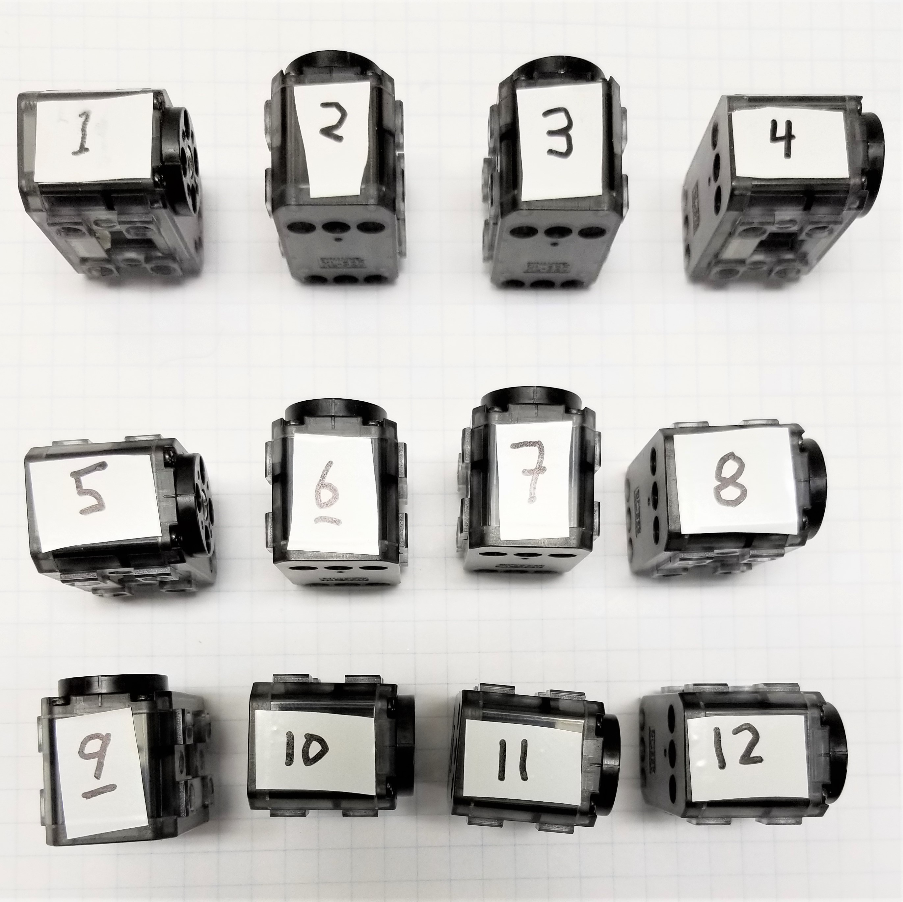

Microsoft Applied Robotics Research Library
Microsoft Applied Robotics Research Library
Open Source Samples for Service Robotics

gestureBot Construction Guide
Session 2: Configure the Servos
In this session we will 3D-print the robot's torso components while establishing the communication network for our servo motors by connecting them one-by-one to the PC and using a software tool to program each with a unique ID.
Parts:
- USB hub and power supply, servo, and servo controller assembly from Session 1
- servo set aside in Session 1
- (10) servos and their 130mm cables
Tools:
- pen and light-colored tape for labeling servo ID's
Procedure:
First, start 3D-printing the parts required for the next session:
Tip: Many 3D-printers have enough room on their build plate to print all of these models at the same time. Follow your printer's software instructions on how to add multiple models to a printing project file.
Second, download and install the servo configuration software:
-
Download the Robotis Dynamixel Wizard 2.0 software appropriate for you platform from this web page: http://en.robotis.com/service/downloadpage.php?ca_id=10
-
Install and launch the Dynamixel Wizard 2.0 application, which provides a Graphical User Interface (GUI) for configuring the servo motors. If needed, installation instructions are provided on the this web page: https://emanual.robotis.com/docs/en/software/dynamixel/dynamixel_wizard2/#introduction
-
Select the Options button on the top level menu
- In the Scan section, adjust the following settings:
- select only Protocol 2.0
- select the com port that showed up in Device Manager
- select only 1000000 bps
- leave the other options at default
- select OK
-
Select the Scan button on the top level menu.
-
The scan should find one XL-320 servo at ID:001 in the list on the left side of the GUI,and show a list of the servo's memory page in the center of the GUI. Also, a device listed as Unknown at ID:200 will appear in the list. This represents the servo controller PC board and can be ignored. In the left-side list, select the [ID:001]XL-320 servo node.
-
In the memory page list, select and highlight row Address 3, which contains the servo's ID. If the servo is brand new out-of-the-package, it should already be set to Decimal value "1".
-
When the Address row is selected, a window labeled ID will appear in the lower right corner of the application GUI. In the list of available addresses, select address 2 (Decimal) and then select "Save" below.
-
The memory page list should now show the value Decimal 2 in the ID row.
-
In the upper right corner of the UI basic controls for the XL-320 are available. By turning the Torque switch on and then selecting a position on the wheel, the servo horn will rotate to that position. Feel free to try out turning the LED off and on and switching from the Joint to Wheel mode. You will notice that other UI's appear on the right side of the application when different rows are selected in the memory page. For now, don't change any other parameter other than the servo ID. Tip: Be sure to return to Joint mode before you finish.
-
Label the newly programmed servo as ID:2 with tape and a pen, or return the servo to the bag and label the bag, or whatever method works best for you to identify the servo ID later.
Third, program the servo ID's from 1 to 12:
- Disconnect the labeled servo and repeat the process above until each of the servos has been programmed and labeled with a unique ID from 1 through 12. 
Tip: Removing the cable from the servo requires significant force, but the Robotis cables are strong and designed for this. Grip the cable between your thumb and the side of your index finger near the servo-side connector and grip the servo with your other hand. Without jerking, pull the cable firmly up and out of the connector.